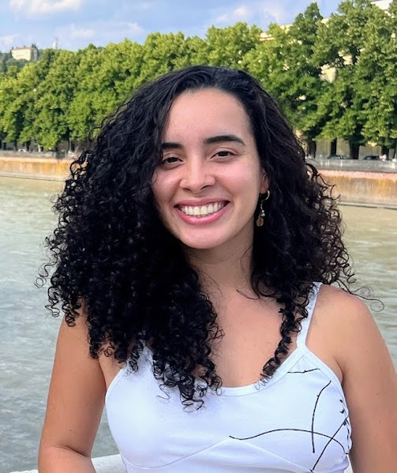
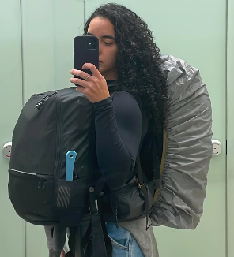

Sobre mim
Estudante de Sistemas de Informação e apaixonada por desenvolvimento backend e segurança da informação. Atualmente trabalho com Cybersecurity e estou construindo minha carreira em Engenharia de Software.
Hobbies
Moto
Amo sair por aí pilotando minha motinha.
Praia
Meu lugar favorito sempre!
Esportes
Musculação, natação, pilates, lutas e tudo mais que o Gympass possa oferecer.
Leitura
Principalmente livros de suspense.
Jogos em grupo
Sou bem competitiva rs.
Top 5 Filmes
O Poderoso Chefão II
Irmão Urso
Mamma Mia!
Before Sunset
Incendies

Um sonho realizado: meu mochilão em 2025
Uma das conquistas que mais me orgulho foi ter realizado, sozinha, um grande sonho: fazer um mochilão pela Espanha, Itália e Marrocos. Para conseguir realizar essa experiência, fiz todo o planejamento, organização e investimento da viagem, saindo completamente da minha zona de conforto e desenvolvendo ainda mais minha autonomia e confiança.
Aprendizados além das fronteiras
Além de conhecer novas culturas e pessoas de diferentes partes do mundo, participei de experiências de voluntariado em hostels e agroturismo, onde trabalhei com equipes multiculturais, pratiquei idiomas e melhorei muito habilidades como comunicação, adaptação e resolução de problemas. Essa jornada transformou minha forma de enxergar desafios e reforçou minha capacidade de aprender, me reinventar e criar conexões em novos ambientes. Sou muito grata por tudo que vivi e aprendi durante essa jornada.
Entre em contato!
Gostou da página? Me envie uma mensagem.